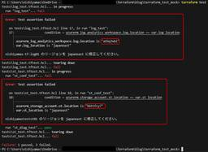
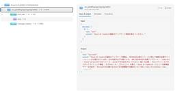
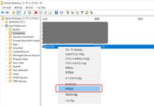
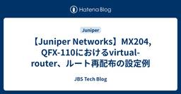
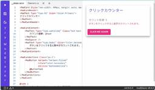

JBS Tech Blog
https://blog.jbs.co.jp/
JBS Tech Blogは、日本ビジネスシステムズ（JBS）の社員が分担して執筆を担当し、技術情報を発信しているブログです！
フィード

terraform testにてMockプロバイダーを試してみた
JBS Tech Blog
以前terraform testを試しましたが、terraform test機能としてMockプロバイダーがTerraform v1.7よりサポートされております。 github.com 今回は本機能を試してみようと思います。 Mockプロバイダーとは 前提条件 事前準備 リソース作成用のTerraform定義ファイルを作成する テストファイル(.tftest.hcl)を作成する terraform testを実行する 設定値が正しい状態で実行する 設定値が誤った状態で実行する st.tfを一部設定変更する terraform testを実行する おわりに Mockプロバイダーとは Mockプ…
2日前

Azure AI Foundry Agent ServiceでMCP toolを利用するエージェントを作成する
JBS Tech Blog
先日、Azure AI Foundry Agent ServiceでModel Context Protocol (MCP)をtoolとしての利用がサポートされたので、試してみました。今回は、Python SDKを使い、MCP toolを利用するエージェントの実装方法を記載します。 環境変数の設定 実装 コード 実行結果 既存のエージェントを利用するコード 終わりに 参考 環境変数の設定 次の環境変数を設定します。※ 値は適切なものに書き換えてください。 PROJECT_ENDPOINT="https://<resource_name>/api/projects/<project_name>"…
2日前

【Microsoft×生成AI連載】People Skillsの紹介~Copilotで従業員のスキルを見える化~
JBS Tech Blog
Microsoft 365 Copilotの新機能「People Skills」が正式リリース。AIがユーザーのスキルを自動で解析・可視化し、個人やチーム、組織のスキルを効率的に管理できます。スキルを把握・活用したい方に最適の情報をお届けします。
2日前

System Security Services Daemon（SSSD）によるRed Hat Enterprise Linuxのドメイン参加
JBS Tech Blog
本記事では、RHELサーバーでドメイン参加する手順を説明します。
2日前
Terraformのcheckブロックを試してみた
JBS Tech Blog
以前terraform testを試しましたが、Terraformモジュールやリソースのテストを実行することができる機能として、terraform testの他にTerraformのv1.5よりcheckブロックの機能が追加されております。 github.com 今回は本機能を試してみようと思います。 checkブロックとは 前提条件 事前準備 リソース作成用のTerraform定義ファイルを作成する check.tfを作成する 実行する App Serviceへの接続が可能な状態で実行する App Serviceへの接続が不可な状態で実行する app.tfを一部変更する 再度実行する おわり…
3日前
NIST SP800-171を徹底解説!! ー SP800-53との比較 ー
JBS Tech Blog
セキュリティ分野で近年よく耳にするSP800。セキュリティ製品を導入する際に、SP800に準拠しているという文言があるだけで、製品選定では加点になりますよね。 SP800はNIST(米国国立標準技術研究所)が発行している一連のセキュリティガイドラインです。またNISTはSP800以外にもCSF (NIST Cybersecurity Framework)やAI RMF (NIST AI Risk Management Framework)といったガイドラインを発行しています。 特に、NIST SP 800-171とNIST SP800-53は、米連邦政府やパートナー企業が情報セキュリティ体制を…
3日前

AIエージェント実現にむけての一手 ― Computer Useによる自動操作の検証
JBS Tech Blog
本記事では、Azure OpenAI の Computer Use Preview モデルと、ブラウザ操作を自動化する Playwright を組み合わせたAIエージェントの構築手法について解説しました。
3日前

【Juniper Networks】MX204, QFX-110におけるvirtual-router、ルート再配布の設定例
JBS Tech Blog
今回はJuniper機器における仮想ルータ設定方法となるrouting-instancesをvirtual-routerで構築する場合の設定例と、その仮想ルータで利用することになるルート再配布の設定例を解説します。 routing-instances(virtual-router)の設定例 virtual-router部分の設定 ルート再配布の設定 ポリシーステートメントの設定 設定例についてのまとめ routing-instances(virtual-router)の設定例 routing-instancesの設定は行数も多くなるので、ルータとしての設定部分とルート再配布部分に分けて解説して…
3日前

Azure AI Agent ServiceでWEB検索結果を取り入れたAI回答を作る方法 1
1
JBS Tech Blog
この記事では、Azure OpenAIの回答にインターネット検索結果を組み込む方法について解説します。特に、Azure AI Agent Serviceを利用してBing検索をエージェントに連携させる手順を、Azureポータルでの具体的な操作を交えて紹介します。また、設定時の注意点や利用規約についても触れ、実際に動作を確認した結果も共有します
4日前

【Microsoft×生成AI連載】【最新情報】Microsoft Copilot Studioエージェントの構成要素を指示文内で直接指定可能に 1
JBS Tech Blog
【Microsoft×生成AI連載】久保田です。今回はMicrosoft Copilot Studioエージェントの最新機能を紹介していきます。 ※この記事の情報は2025/7/15時点のものです。 Microsoft Copilot Studioエージェントに興味がある方や、AIエージェントに興味がある方など様々な方に読んでいただきたい記事となっておりますので、ぜひご覧ください。 これまでの連載 Microsoft Copilot Studioについて Microsoft Copilot Studioエージェントの最新機能について 利用シーンとメリット 利用シーン メリット 注意点 まとめ …
4日前
あなたのシステムは脆弱性だらけ？STIGで強化しよう！ 1
JBS Tech Blog
サイバー攻撃や情報漏洩関連のニュースが毎日のように取り上げられる中、セキュリティ技術は、現代の情報技術において欠かせない要素となっています。 ただ、一概にセキュリティといっても実際には、どこまで強固にすればいいのか、何に対してセキュリティを当てればいいのか、どのくらいの頻度で見直していけばいいのか、など考えることはたくさんあり、それらを1から考えるのはとても大変です。 その答えがSTIGにはあります。 本記事では、そもそも「STIGが何か」というところから、STGIの活用法まで解説します。 STIGとは STIGの目的 STIGの種類 STIGの実施方法 現状評価 手順の導入 テストと確認 継…
4日前

MudBlazor活用事例:おすすめコンポーネント5選 1
JBS Tech Blog
MudBlazorは、Blazorを活用したモダンなUIコンポーネントライブラリで、.NETのアプリケーション開発をより簡単で効果的に行えるように設計されています。 豊富なコンポーネントと直感的な設計により、開発者が優れたユーザーエクスペリエンスを提供する手助けをします。 MudBlazor - Blazor Component Library MudBlazorの概要 MudBlazorの特徴 MudBlazorのUIコンポーネントの魅力 おすすめMudBlazorコンポーネント5選 DataGrid 特徴と使い方 Chat 特徴と使い方 吹き出し位置の判別方法 さらにカスタマイズした使い方…
5日前
【OpManager使ってみた】第4回 OpManagerでのリソース監視 1
JBS Tech Blog
監視ソフトウェア「OpManager」について、連載形式で紹介しています。 第4回となる本記事では、OpManagerでのリソース監視について、説明していきます。 概要 リソース監視設定 CPU閾値監視設定 メモリー閾値監視設定 アラート発報確認 まとめ 概要 第3回でOpManagerへの機器登録と死活監視設定が完了しました。 blog.jbs.co.jp ここからは、OpManagerへ登録した機器のリソース監視設定手順について紹介していきます。 リソース監視設定 ここでは、CPUとメモリーのしきい値設定を紹介します。 CPU閾値監視設定 OpMnagerの「インベントリ」画面で登録した機…
5日前

Power Automate：Teams内で同グループメンバーのみにメッセージを送信する
JBS Tech Blog
本記事ではMicrosoft Teamsで同グループのメンバーのみにメッセージを送信する方法をご紹介します。効率的なコミュニケーションを実現するためのステップを詳しく解説。
8日前
ユニファイドコミュニケーション採用時のボイスゲートウェイによる回線収容
JBS Tech Blog
ユニファイドコミュニケーション（以後UCと記載）は、現代のビジネスにおいて非常に重要な役割を果たしています。複数の通信手段を統合することで、よりスムーズで効率的なコミュニケーションを実現し、企業の生産性向上に寄与しています。 この技術により、従業員間のコラボレーションが促進され、業務の効率性が大幅に向上します。昨今では企業において電話交換機の入れ替えを行う際に、UCで検討を行うケースが増えています。 UCでは電話番号を付加することで、既存の電話交換機からの置き換えの検討をすることが可能です。システムに対し、新たに電話番号を設けることや、既存の電話交換機で使用している番号をクラウドで収容すること…
8日前
Intuneライセンスがない環境でデバイスを条件にした条件付きアクセス許可ポリシーの作成方法と有用性
JBS Tech Blog
企業において、私用端末(BYOD）の抑止を実現したい場合、Microsoft Intune（以下、Intune）にてデバイスベースの条件付きアクセス設定を利用する方法が考えられます。 この機能を利用する場合、当然ですが、Intuneライセンスが必要になります。 一方で、Microsoft Entra ID P1ライセンス（旧名：Azure AD Premium P1）でも、Entra上のデバイス登録機能は利用が可能です。 「Intuneライセンスは所有していないがMicrosoft Entra ID P1ライセンスはある」という環境でも、Entra上のデバイス登録機能が利用できるのであれば、デ…
8日前
【Microsoft×生成AI連載】【Power Platform】Microsoft Power AutomateでMicrosoft Copilotを使ってみた
JBS Tech Blog
ちょうど1年前にPower AutomateでCopilotを使ってフローをまるごと作成してみたり、アクションを追加するなどの検証を行いました。そこから1年が経ち、1年間改善があったかを確認しようと思います。本記事では1年前と同じプロンプトを再検証し、改善点を探るとともに、新たに試したさまざまなプロンプトに対してもご紹介します。
9日前
PIM対応もばっちり！Microsoft Graph PowerShellで構築するEntra IDロール棚卸術
JBS Tech Blog
混在しがちなEntra IDの管理者ロールを効率的に管理する方法を解説。管理者必見のPowerShellスクリプトで、ロール情報の可視化とCSV出力を実現します。
9日前
Terraformにてterraform testを試してみた
JBS Tech Blog
Terraformのv1.6より、Terraformモジュールやリソースのテストを実行することができる「terraform test」の機能が追加されております。 github.com 今回は本機能を試してみようと思います。 terraform testとは 前提条件 事前準備 リソース作成用のTerraform定義ファイルを作成する テストファイル(.tftest.hcl)を作成する terraform testを実行する 設定値が正しい状態で実行する 設定値が誤った状態で実行する st.tfを一部設定変更する terraform testを実行する おわりに terraform testと…
9日前
【OpManager使ってみた】第3回 OpManagerへの機器登録
JBS Tech Blog
監視ソフトウェア「OpManager」について、連載形式で紹介しています。 第3回となる本記事では、OpManagerへの機器登録について説明していきます。 概要 機器監視登録 Windows Serverの監視登録 Linux Serverの監視登録 死活監視の機能確認 まとめ 概要 第2回でOpManagerの初期設定が完了しました。 blog.jbs.co.jp これでOpManagerの監視機能を使用することが出来ますので、OpManagerへの機器登録手順を実際に進めていきます。 機器監視登録 Windows Serverの監視登録 OpManager画面で「設定」→「ディスカバリー…
10日前
【OpenManage Enterprise】オフラインバージョンアップデートの方法（Windows ServerでのHTTP共有編）
JBS Tech Blog
OpenManage Enterprise（以降OME）とは、Dell Technologiesより提供される1対多のシステム管理用/モニタリング用Webアプリケーション製品です。 OMEのソフトウェアバージョンは、新しいバージョンが出ている場合アップデートすることが可能です。 インターネット接続が可能な環境であればオンラインアップデートにて対応できますが、インターネット接続が不可の場合は、いくつか下準備をしたうえでオフラインアップデートの手順で対応が必要となります。 オフラインアップデートの手順としては、以下の3つの方法があります。 Windows ServerでのNFS共有を利用した方法 …
10日前
Azure Linux VM に cloud-init を使用して SWAP ファイルを作成する際に失敗する問題と対処法
JBS Tech Blog
Azure 上の RHER に cloud-init を使用して SWAP ファイルが作成できない問題が発生し、原因と対処法についてまとめました。
11日前
【Microsoft×生成AI連載】【Excel】ExcelでのCopilot活用術：スマートなコンテキスト認識
JBS Tech Blog
本記事では「Microsoft Excel」(以下、Excel)で利用できるCopilotの機能について紹介します。
11日前
【OpManager使ってみた】第2回 OpManagerの初期設定
JBS Tech Blog
（2025年7月17日追記）初出時のパフォーマンスチューニングについての記載を削除しました。 本記事では、監視ソフトウェア「OpManager」の紹介をしていきます。 第2回は、OpManagerのインストール後の初期設定ついて、説明していきます。 概要 OpManagerの初期設定 OpManagerの起動 ログインパスワード変更 AD認証設定 認証情報設定 まとめ 概要 OpMnagerをインストール後、監視登録および機能を使用するために必要な設定をしていく必要があります。 本記事では、初期設定の手順について紹介していきます。 OpManagerの初期設定 OpManagerの起動 OpM…
12日前
JamfとIntuneにおけるグループ作成方法の違い
JBS Tech Blog
Jamf Pro、Intuneはどちらもデバイス管理およびエンドポイント管理を行うための成熟したツールです。 しかし、Microsoft IntuneがWindows・iOS・Androidといった複数のプラットフォームであるのに対し、Jamf ProはmacOS・iOS・iPadOSといったAppleデバイスが対象であり、特徴は異なります。 本記事では様々な差を持つ二つの製品に関して「グループ作成」の観点で違いをご紹介いたします。 グループ作成における特徴 Jamf Pro Intune 手順（動的グループ） Jamf Pro Intune 最後に グループ作成における特徴 Jamf Pro…
12日前
Teams Phoneで特定の番号からの着信をブロックする
JBS Tech Blog
Teams Phoneにて特定の番号からの着信をブロックすることができます。個人での設定も可能ですが、今回は管理者での設定方法についてご説明します。
12日前
Copilot Studioでエージェントを作成してみた！ 実践編
JBS Tech Blog
Copilot Studioでのエージェントの作成手順を開設。AIを活用した旅行プラン提案するエージェント「TravelAgent」を作成します。
13日前
【 Microsoft Fabric 】日付を含むデータに休祝日を反映してみる 後編
JBS Tech Blog
Microsoft Fabricは、Microsoft のSaaS 型データ分析基盤サービスです。SaaS 型のため、容易にデータ分析の一連の流れを試すことができる特徴があります。 本記事含めた前後編として、Microsoft Fabricを利用してサンプルから祝日のデータを取得し、1年間の東京都の降水量へ休祝日を反映する方法を解説します。 前編では、用意した東京都の降水量データをクリーニングして、レイクハウスのテーブルに格納するまでの手順を解説しました。 blog.jbs.co.jp 後編となる本記事では、サンプルの祝日データを利用し、前編で用意した日付を含むデータに祝日を付与する方法につい…
13日前
【Microsoft Azure】共有ディスクを利用したWSFCの構築方法
JBS Tech Blog
Azureのマネージドディスクのオプションである共有ディスクを有効にすることによって、1つのディスクから複数のVMに接続が可能になります。 また、Windowsの機能であるWindows Server Failover Clustering(以下WSFCと記載)と組み合わせることによって、片方のVMに障害が発生した場合でもダウンタイムなしでディスクに接続することが可能となります。 今回は、共有ディスクを利用したWSFCの構築方法を記載します。 用語説明 共有ディスクとは WSFCとは 前準備 WSFC作成手順 終わりに 用語説明 共有ディスクとは 共有ディスクとは、Azureマネージドディスク…
15日前
Veeamを使ってAmazon S3へバックアップしてみる第3弾 バックアップ編
JBS Tech Blog
本記事では前回解説した「Veeamを使ってAmazon S3へバックアップする上でのAWS側の設定とVeeam側の設定」の続きとして、Veeamを使ってAmazon S3にバックアップできるかどうかの動作検証を行います。 手順詳細 バックアップジョブの作成 バックアップジョブの実行(手動実行) まとめ 手順詳細 バックアップジョブの作成 Veeam Backup and Replication Consoleを起動し、[Home]>[Backup Job]より「Virtual machine...」をクリックします。 バックアップジョブ作成ウィザードが起動し以下、設定項目について設定を行い「N…
16日前